General Settings
This section allows administrators to configure core application settings including date formats, themes, language preferences, logo configuration, user management, and more. Settings modified here are applied globally across the application.
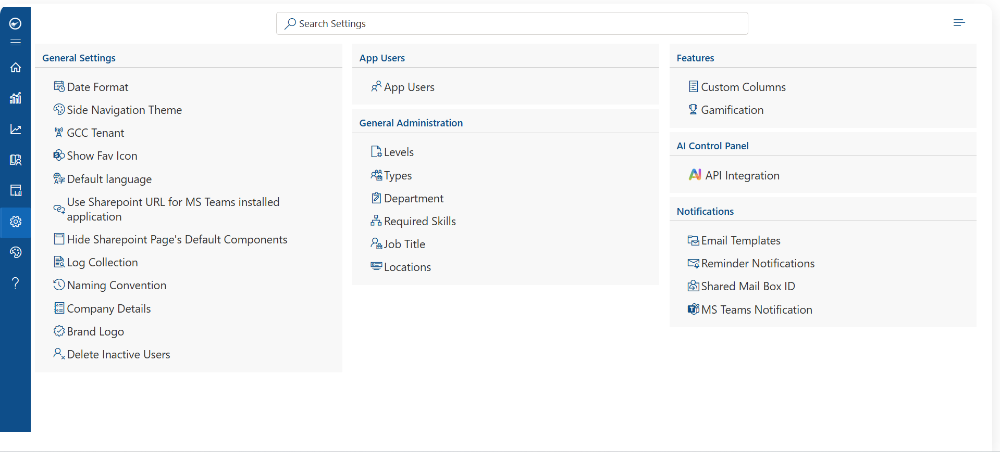
General Settings
Date Format
Allows administrators to set the date format used throughout the application. Once changed, the selected format will be reflected across all modules and pages.
- Navigate to Admin > Settings > General Settings.
- Locate the Date Format option.
- Select your preferred date format from the dropdown.
- Click Save to apply the changes.
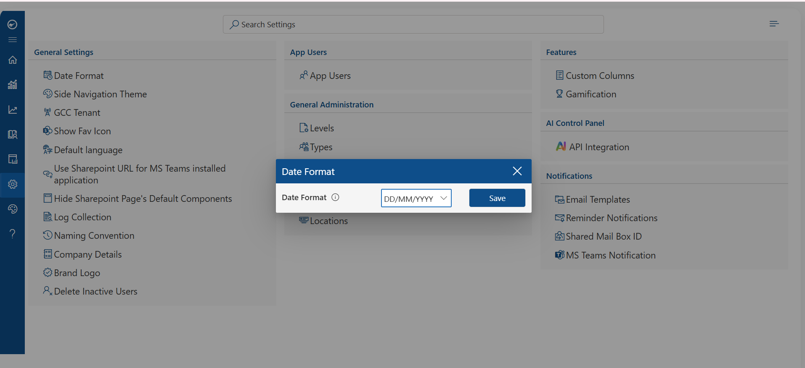
Note: The date format change applies globally to all users in the application.
Side Navigation Theme
This feature enables administrators to customize the visual theme of the side navigation bar. Adjusting the theme helps align the application's appearance with your organization's branding.
- Navigate to Admin > Settings > General Settings.
- Find the Side Navigation Theme option.
- Choose your preferred theme (e.g., Dark, Light, or Custom colour)
- Click Save to apply.
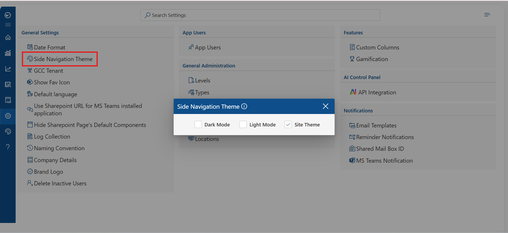
Note: The selected theme is applied to all users across the application.
GCC Tenant
The GCC (Government Community Cloud) Tenant setting allows organizations operating in the Microsoft GCC environment to configure the application to work within GCC compliance boundaries.
- Navigate to Admin > Settings > General Settings.
- Locate the GCC Tenant toggle.
- Enable the toggle if your organization uses a Microsoft GCC tenant.
- Click Save to confirm the configuration.
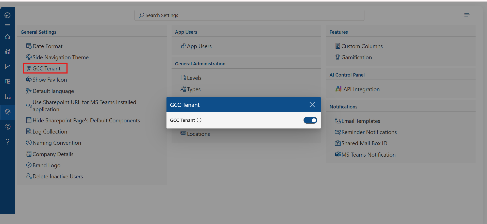
Note: This setting must be enabled for organizations using Microsoft 365 GCC or GCC High environments to ensure proper authentication and data residency compliance.
Show Fav Icon
By toggling this option, you can enable or disable the display of the favicon on the left side of the browser tab. This helps users quickly identify the application when multiple tabs are open.
- Navigate to Admin > Settings > General Settings.
- Locate the Show Fav Icon toggle.
- Enable the toggle to display the favicon in the browser tab.
- Click Save
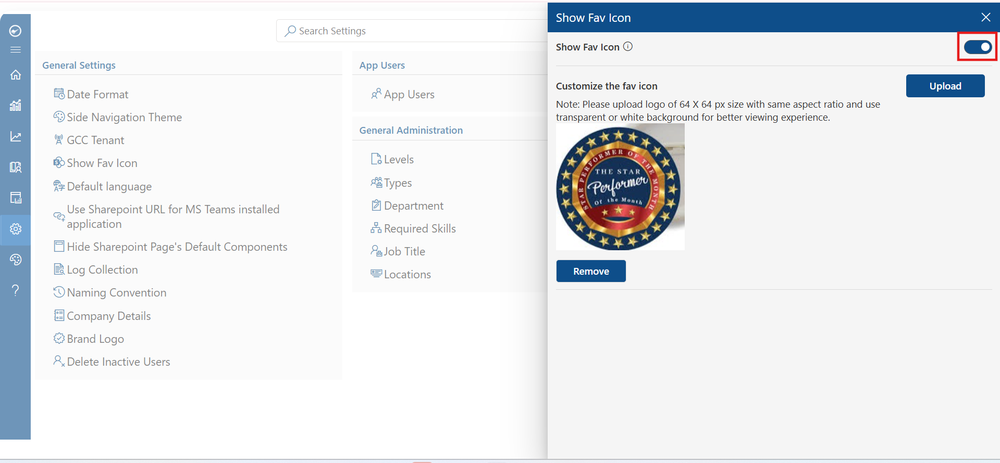
Default Language
This feature allows administrators to set the default language for the application. Users can designate their preferred language for web content, and the system will default to this language unless individually overridden.
- Navigate to Admin > Settings > General Settings.
- Find the Default Language dropdown.
- Select the preferred language from the available options.
- Click Save to apply the language setting across the application.
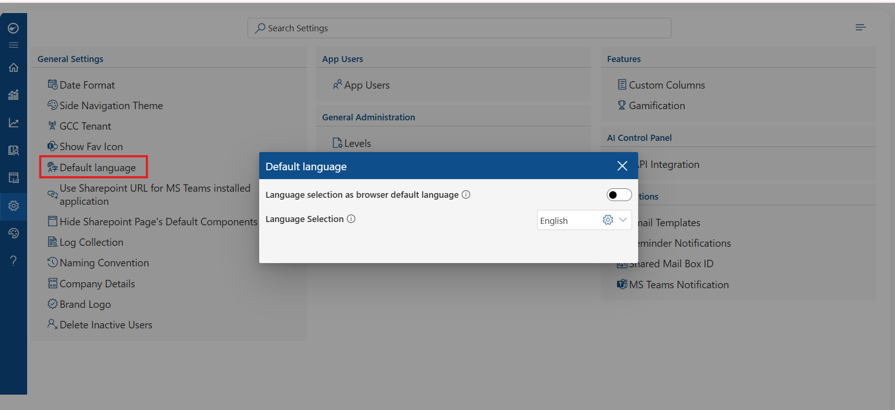
Note: Individual users may override the default language from their personal profile settings if permitted.
Use SharePoint URL for MS Teams Installed Application
This setting configures the application to use the SharePoint URL when the LMS is installed as an application within Microsoft Teams. This ensures seamless navigation and proper rendering within the Teams environment.
- Navigate to Admin > Settings > General Settings.
- Locate the 'Use SharePoint URL for MS Teams installed application' toggle.
- Enable the toggle if the LMS is deployed as a Teams app.
- Enter the SharePoint URL if prompted.
- Click Save to apply.
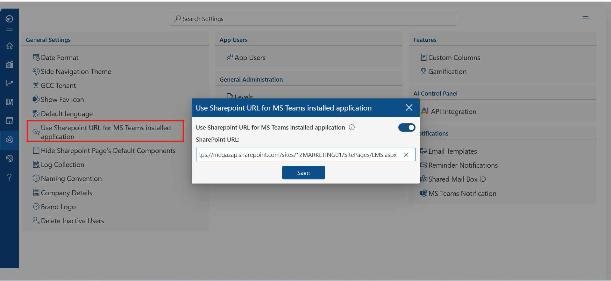
Note: This setting is only applicable when the application is installed as a tab or personal app within Microsoft Teams.
Hide SharePoint Page's Default Components
Activating this toggle will automatically remove the default empty space and default components surrounding the designated webpart on SharePoint pages, providing a cleaner and more focused view.
- Navigate to Admin > Settings > General Settings.
- Select Configure to begin processing.
- Enable the toggle to hide default SharePoint components.
- Click Save.
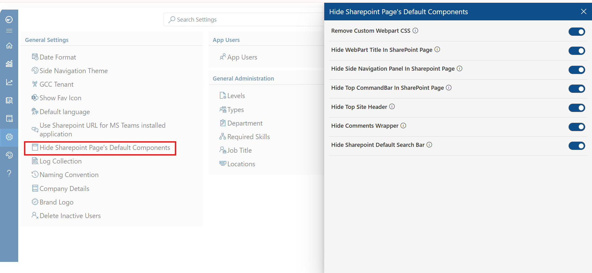
Log Collection
The Log Collection feature enables administrators to capture and download application logs for troubleshooting and diagnostics. This is especially useful when reporting issues to the HR365 support team.
- Navigate to Admin > Settings > General Settings.
- Locate the Log Collection option.
- Enable or configure the log collection settings as needed.
- Use the Download Logs button to retrieve the collected log files.
- Share log files with HR365 support when raising a ticket.
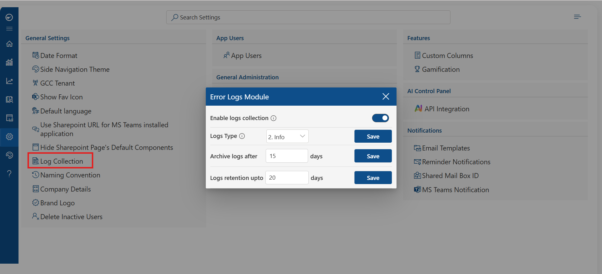
Note: Log collection may have a performance impact during high-traffic periods. Enable only when needed for troubleshooting.
Naming Convention
The Naming Convention setting allows administrators to define custom section names that appear as headings in the ESS portal, under which required documents can be attached.
- Navigate to Admin > Settings > General Settings.
- Select Configure to proceed.
- Enter the desired naming conventions for your document sections.
- Click Save to apply the changes.
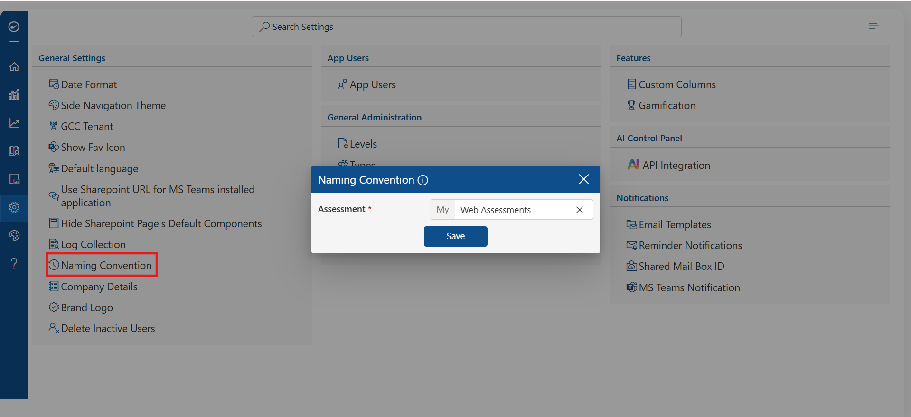
Company Details
The Company Details section allows administrators to configure the organization's public-facing information displayed within the application.
- Navigate to Admin > Settings > General Settings.
- Select Configure to open the Company Details panel.
- Fill in the Company Name, Tagline, and Company Bio.
- Click Save to apply the changes.
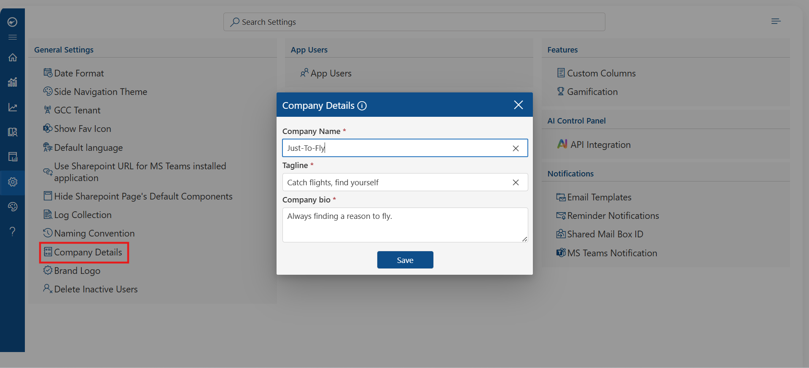
Brand Logo
This setting allows administrators to upload and manage the organization's brand logo that appears within the application interface.
- Navigate to Admin > Settings > General Settings.
- Locate the Brand Logo section.
- Upload your organization's logo in the supported format.
- Click Save to apply.
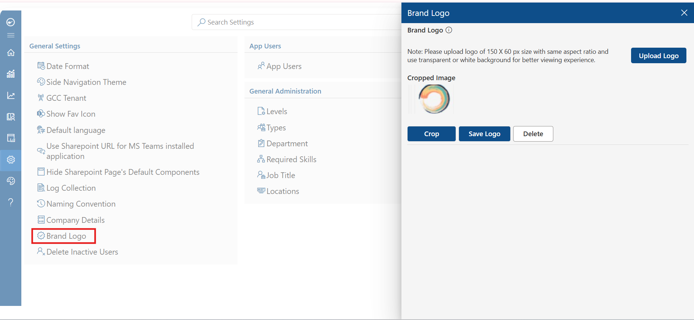
Delete Inactive Users
This feature allows administrators to automatically or manually remove users who have been inactive for a defined period, helping maintain a clean and up-to-date user base.
- Navigate to Admin > Settings > General Settings.
- Locate the Delete Inactive Users option.
- Set the inactivity threshold (e.g., number of days without login).
- Enable the toggle to automatically delete inactive users, or use the manual delete option.
- Click Save to confirm the configuration.
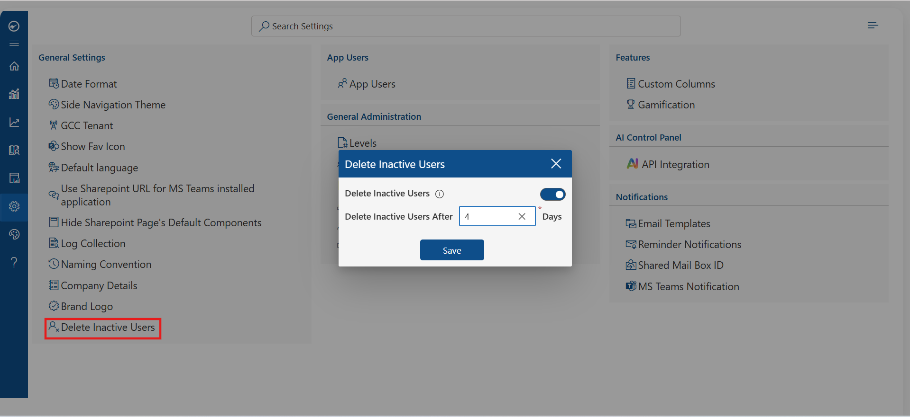
Note: Deleted users cannot be recovered. Ensure you have exported or backed up any required user data before enabling automatic deletion.
Summary of New Features
The following features have been added to the General Settings section in this release:
Side Navigation Theme |
Customize the color theme of the application's side navigation bar. |
GCC Tenant |
Enable GCC compliance mode for Microsoft Government Cloud tenants. |
Default Language |
Set the default display language for the application. |
SharePoint URL for MS Teams |
Use SharePoint URL when LMS is installed as a MS Teams application. |
Log Collection |
Enable log capture and download for support and diagnostics. |
Delete Inactive Users |
Automatically or manually remove users who have been inactive. |